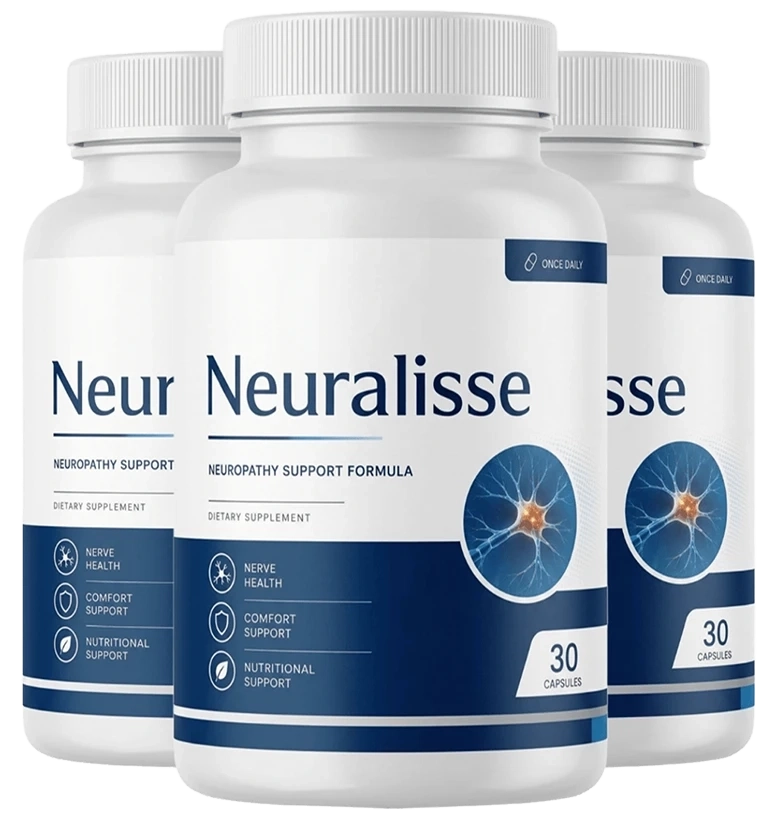
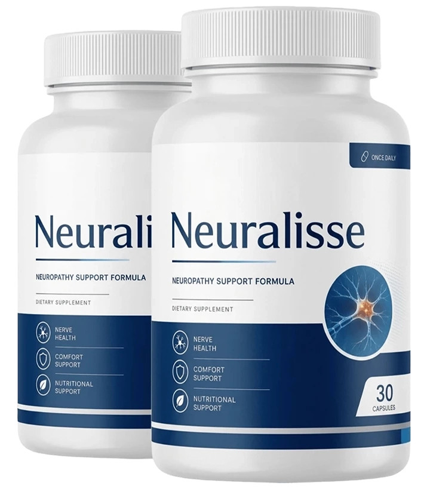
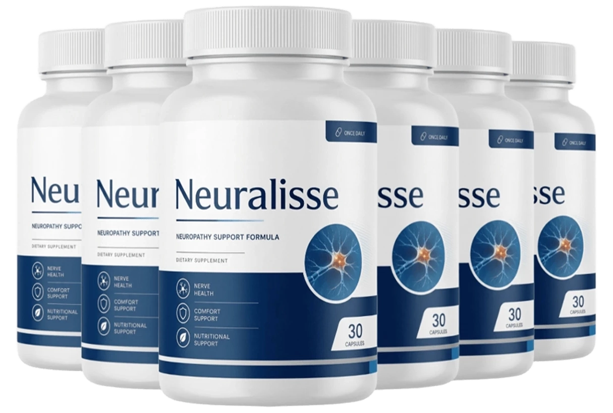
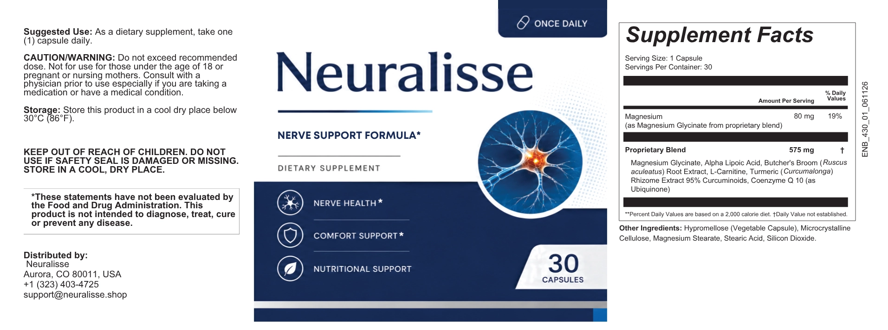

Neuralisse®: Advanced Support for Brain, Nerve & Everyday Mental Clarity
Modern life takes a toll on your nervous system. Neuralisse is a meticulously formulated, daily dietary supplement combining 12 clinically studied vitamins, minerals, and botanicals to support nerve comfort, mental focus, and cellular energy from the inside out.
Unlike single-ingredient pills, Neuralisse provides a comprehensive, multi-pathway approach to nervous system wellness. It nourishes nerve function, protects against oxidative stress, and promotes healthy cellular energy—all in one convenient daily capsule, backed by a 60-day money-back guarantee.
60-day money-back guarantee Free US shipping on select bundles Secure official checkout

What Is Neuralisse™?
Neuralisse is a dietary supplement designed for adults who want a simple, convenient way to complement their daily wellness routine. It is presented as a nutritional option for people interested in supporting brain, nerve, and everyday mental wellness as part of a balanced lifestyle.
Rather than relying on quick fixes or unrealistic promises, a thoughtful wellness routine starts with consistency. Balanced nutrition, regular movement, hydration, quality sleep, and sensible daily habits can all play an important role in supporting overall well-being.

Is Modern Life Draining Your Nervous System?
Between chronic stress, poor sleep, environmental toxins, and nutritional gaps, your brain and nerves are working overtime. Over time, this can manifest as everyday discomforts that disrupt your quality of life.
Mental Fog
Struggling to concentrate, forgetting names, or feeling mentally exhausted by mid-afternoon.
Nerve Discomfort
Occasional tingling, numbness, or a "pins and needles" sensation in the hands and feet.
Low Cellular Energy
Feeling physically drained despite adequate sleep, due to inefficient mitochondrial energy production.
Restless Nights
An overactive nervous system making it difficult to wind down, relax, and achieve deep, restorative sleep.
If this sounds familiar, your body may be lacking the foundational nutrients required for optimal nerve signaling and cognitive resilience. Neuralisse was designed to bridge this nutritional gap.
6 Pillars of Everyday Nervous System Wellness
Thoughtfully designed to complement your daily routine and support long-term cognitive and physical comfort.
Supports Normal Nerve Health
Provides essential vitamins like B12 and Benfotiamine that contribute to the nutritional needs of healthy nerve signaling and everyday nerve comfort.
Promotes Antioxidant Balance
Contains Alpha Lipoic Acid, Turmeric, Spirulina, and Quercetin to help support the body’s natural defenses against oxidative stress and cellular damage.
Supports Healthy Cellular Energy
Includes L-Carnitine and B-vitamins that provide nutritional support for the body’s natural energy-producing processes, helping maintain overall vitality.
Encourages Everyday Comfort
Combines botanical ingredients like Corydalis and Passionflower, traditionally associated with relaxation, calm, and physical comfort.
Simple Daily Routine
A straightforward, easy-to-swallow capsule format designed for convenient use as part of your regular morning or evening wellness habits.
Complements Overall Wellness
Designed to fit seamlessly alongside balanced nutrition, regular physical activity, sufficient rest, and healthy lifestyle choices for holistic support.
12 Ingredients, Three Connected Pathways
Rather than relying on a single mechanism, Neuralisse works across three interconnected biological pathways that contribute together to nerve comfort, mental clarity, and everyday wellness. Each ingredient was selected for its specific role in this multi-pathway approach.
Nourish & Protect Nerve Function
The foundation of nerve wellness starts with providing the essential nutrients your nervous system needs to function normally. Neuralisse delivers critical vitamins and compounds that support the structural integrity of nerve cells and promote healthy signaling.
- Vitamin B12 (Methylcobalamin): The active, bioavailable form of B12 that supports healthy red blood cell formation and maintains the protective myelin sheath around nerves.
- Benfotiamine: A fat-soluble form of Vitamin B1 designed for superior absorption, contributing to normal energy metabolism and nerve comfort.
- L-Carnitine Tartrate: Involved in transporting fatty acids into mitochondria for energy production, with research exploring its relationship to healthy nerve function.
Neutralize Oxidative Stress
Nerve tissues are particularly vulnerable to oxidative damage from free radicals. Over time, this cellular stress can impair nerve function and contribute to everyday discomfort. Neuralisse includes powerful antioxidants that work in both water and fat environments to protect delicate nerve structures.
- Alpha Lipoic Acid: A uniquely versatile antioxidant that functions in both water and fat, supporting mitochondrial energy and maintaining healthy oxidative balance in nerve tissues.
- Quercetin: A naturally occurring flavonoid with recognized antioxidant properties that supports healthy cellular function throughout the body.
- Turmeric Root: Contains curcuminoids extensively studied for supporting healthy inflammatory balance and cellular protection.
- Spirulina: A nutrient-dense blue-green algae providing a broad spectrum of antioxidants and nutrients for overall cellular wellness.
Energize, Calm & Restore
A healthy nervous system requires both energy for daily function and calm for recovery. Neuralisse combines ingredients that support cellular energy production with traditional botanicals associated with relaxation and physical comfort, creating a balanced approach to nerve wellness.
- Passionflower Leaf: A traditional botanical with a long history of use for promoting relaxation, calm, and restful sleep.
- Corydalis Root: Used in traditional herbal practices, commonly associated with physical comfort and relaxation support.
- MSM (Methylsulfonylmethane): An organic sulfur compound studied for its potential role in supporting normal inflammatory balance and joint comfort.
- Ginger Root: A traditional botanical widely used for digestive wellness and general comfort, containing naturally occurring antioxidant compounds.
- Black Cohosh Root: Adds another layer of traditional botanical support for overall wellness and balance.
Most nerve and brain supplements focus on just one mechanism — perhaps a single vitamin or antioxidant. But your nervous system is complex, requiring nourishment, protection, and balance all at once.
By addressing all three pathways simultaneously, Neuralisse provides comprehensive, synergistic support that no single-ingredient product can match. This is why consistent daily use over 60-90 days allows the formula to work with your body's natural processes for optimal results.
Choose Your Neuralisse Package
The Neuralisse formula is available in three package options, giving you the flexibility to choose the option that best fits your needs, budget, and wellness timeline.
2 Bottles
60-Day Supply
Total: $138 + Small Shipping
- 60-day supply
- 60-day money-back guarantee
- One-time purchase, no rebill
6 Bottles
180-Day Supply

Total: $294 · Free US Shipping
- Lowest price per bottle
- Free US shipping
- Extended supply for consistency
- 60-day money-back guarantee
3 Bottles
90-Day Supply
Total: $177 · Free US Shipping
- Free US shipping
- 90-day supply for routine building
- 60-day money-back guarantee
60-Day Money-Back Guarantee
If the current Neuralisse offer includes a 60-day money-back guarantee, eligibility and refund conditions are governed by the seller's official terms. Review the current guarantee policy before ordering for the applicable return period, exclusions, return instructions, and customer-support requirements. We want you to feel completely confident trying Neuralisse risk-free.

12 Clinically Studied Ingredients
This research-informed formula makes Neuralisse more than a simple daily supplement. It is thoughtfully designed to provide comprehensive nutritional support for nerve health, antioxidant balance, and overall cellular wellness.
*Formulas may vary. Always review the current Supplement Facts panel on the product label for the complete ingredient list, serving size, and exact amounts.
Vitamin B12 (Methylcobalamin)
The active, highly bioavailable form of B12. It plays a critical role in normal nerve function, supports healthy red blood cell formation, and helps maintain the protective myelin sheath around nerves.
Alpha Lipoic Acid
A uniquely powerful antioxidant that functions in both water and fat environments. It supports mitochondrial energy production and helps maintain healthy oxidative balance in nerve tissues.
L-Carnitine Tartrate
An amino acid derivative involved in transporting fatty acids into mitochondria, where they are converted into usable energy. Research explores its potential relationship with healthy nerve function.
Benfotiamine
A fat-soluble form of Vitamin B1 designed for superior absorption. It contributes to normal energy metabolism and has been studied for its potential nutritional support for normal nerve comfort.
Corydalis & Passionflower
Traditional botanicals with a long history of use in herbal practices. They are commonly associated with relaxation, calming support, and general physical comfort.
Spirulina & MSM
Spirulina provides a broad spectrum of nutrients and antioxidants. MSM (Methylsulfonylmethane) is an organic sulfur compound studied for its potential role in supporting normal inflammatory balance.
Ginger Root
A traditional botanical widely used for digestive wellness and general comfort. It contains naturally occurring compounds with antioxidant properties that contribute to healthy oxidative balance.
Black Cohosh & Turmeric
Turmeric contains curcuminoids extensively studied for supporting healthy inflammatory balance. Black Cohosh adds another layer of traditional botanical support for general wellness.
Quercetin
A naturally occurring flavonoid found in various fruits and vegetables. It is recognized for its antioxidant properties and its role in supporting healthy cellular function.
What People Look For in a Wellness Supplement
Everyone's wellness routine is different. When considering Neuralisse, customers value convenience, clear product information, and consistency.
"What stood out to me was the simple approach. I prefer wellness products that are easy to understand and convenient to include alongside my normal habits, such as staying active, eating well, and getting enough rest."
"For me, convenience matters when building a consistent routine. A product that is easy to keep with my daily essentials makes it simpler to stay organized while I focus on healthy habits and an active lifestyle."
"I like taking time to review the label, serving information, and purchase terms before trying any supplement. Having clear product information makes it easier to decide if it fits my personal wellness routine."
Neuralisse vs. Typical Brain & Nerve Supplements
Not every cognitive or nerve support product is built the same way. Here's how Neuralisse's thoughtful, holistic formula stacks up against the competition.
| Feature | Neuralisse™ | Typical OTC Products |
|---|---|---|
| Comprehensive 12-Ingredient Formula | ✓ Yes | ✗ Often 1-2 isolated ingredients |
| Active B12 (Methylcobalamin) | ✓ Yes | ✗ Often uses cheap Cyanocobalamin |
| Includes Alpha Lipoic Acid & Benfotiamine | ✓ Yes | ✗ Rarely included together |
| Transparent Labeling (No Proprietary Blends) | ✓ Yes | ✗ Hidden dosages |
| Manufacturing Quality | ✓ USA, FDA-registered, GMP | Often overseas, variable standards |
| Money-Back Guarantee | ✓ 60 days | ✗ Rarely offered |
Choose Your Neuralisse Package
The Neuralisse formula is available in three package options, giving you the flexibility to choose the option that best fits your needs, budget, and wellness timeline.
2 Bottles
60-Day Supply
Total: $138 + Small Shipping
- 60-day supply
- 60-day money-back guarantee
- One-time purchase, no rebill
6 Bottles
180-Day Supply
Total: $294 · Free US Shipping
- Lowest price per bottle
- Free US shipping
- Extended supply for consistency
- 60-day money-back guarantee
3 Bottles
90-Day Supply
Total: $177 · Free US Shipping
- Free US shipping
- 90-day supply for routine building
- 60-day money-back guarantee
60-Day Money-Back Guarantee
If the current Neuralisse offer includes a 60-day money-back guarantee, eligibility and refund conditions are governed by the seller's official terms. Review the current guarantee policy before ordering for the applicable return period, exclusions, return instructions, and customer-support requirements. We want you to feel completely confident trying Neuralisse risk-free.
Frequently Asked Questions
Neuralisse™ is presented as a dietary supplement intended to complement an everyday wellness routine. It is designed for adults who are interested in convenient nutritional support alongside healthy lifestyle habits such as balanced nutrition, regular physical activity, adequate hydration, and quality sleep. For the most accurate information about the current formula, serving size, and ingredients, review the product's latest Supplement Facts label.
Always follow the serving size and directions provided on the current Neuralisse™ product label. Supplement formulas and recommended use can change, so the official packaging should be treated as the primary source for current instructions. Do not exceed the recommended serving unless directed by a qualified healthcare professional.
No. Neuralisse™ is a dietary supplement and is not intended to diagnose, treat, cure, or prevent any disease or medical condition. Dietary supplements should not replace prescribed medication, professional medical advice, or a treatment plan recommended by a qualified healthcare provider.
If you take prescription or over-the-counter medications, have an existing medical condition, are pregnant or nursing, or regularly receive medical care, speak with a qualified healthcare professional before using Neuralisse™ or any new dietary supplement. A healthcare professional can consider your individual circumstances and potential interactions.
Package availability, bottle quantities, pricing, shipping terms, and promotional offers may vary. Review the current offer page and product information carefully before ordering to confirm the number of bottles included, the applicable price, shipping details, and any conditions associated with the selected package.
If the current Neuralisse™ offer includes a 60-day money-back guarantee, eligibility and refund conditions are governed by the seller's official terms. Before purchasing, review the current guarantee policy for the applicable return period, exclusions, return instructions, and customer-support requirements. Keep your order information and follow the seller's stated process if you need to request a refund.
Still have questions? Our support team is ready to assist you. Contact Us
Ready to Review Neuralisse™?
Explore the current Neuralisse™ offer, available bottle options, product label information, and purchase terms before making your decision. Take the first step toward supporting your brain, nerve, and mental wellness today.
60-day money-back guarantee Free US shipping on select bundles Secure official checkout
Regular: $99/bottle · Today from $49/bottle
View Current Offer